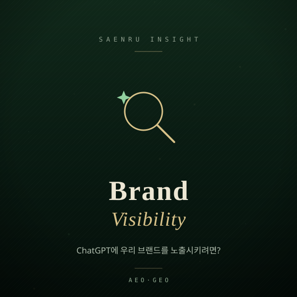

How Do You Get Your Brand Mentioned in ChatGPT?
An eight-point checklist and a measurement routine for making your brand citable in AI answers.

"We rank fine in search, but ChatGPT never mentions us." We hear this a lot lately. The short answer: getting into AI answers is less like buying ad space and more like leaving citable evidence on the open web. Here is where to start and in what order.
Where does ChatGPT get information about your brand?
There are roughly three sources: knowledge baked in at training time, live documents retrieved during the answer, and material the user pastes in. The one you can actually influence is the second — the pages an AI opens while composing a reply.
So the goal is not "train the model on us." It is "make sure a clear, machine-readable document exists when someone asks a question in our category." If a user asks for a studio in a specific neighborhood that fits three people, the model needs a page where location, capacity, price, and booking rules appear as text. If those facts live only inside an image or behind a booking widget, they exist but are never read.
What should you fix first?
Order matters. Build the readable structure before you scale up content. This is the priority list we work through.
- One question per page: don't cram services, pricing, reviews, and hiring onto one page. Split by the question each page answers.
- Answer in the first paragraph: skip the brand story and state the conclusion within two or three sentences. That opening is what tends to get quoted.
- Render in raw HTML: text that only appears after JavaScript executes can be missed depending on the crawler. Core facts should be visible in view-source.
- JSON-LD structured data: add Organization, Product, FAQPage, or LocalBusiness schema so the same facts are also machine-readable.
- Write a fact sheet: location, who it's for, price range or how pricing is calculated, timeline, and what's excluded. Vague phrasing does not get cited.
- Publish an llms.txt: list and summarize your key documents so an AI can grasp the site structure quickly.
- Earn third-party mentions: your own site alone is weak evidence. Directory listings, community posts, and interviews act as cross-verification.
- Show a last-updated date: revise the date whenever pricing or policy changes. It reduces the risk of stale facts being quoted.
How do you know if it's working?
Measure it instead of guessing. Write out 30 to 50 questions your customers would realistically ask, run the same questions through ChatGPT, Gemini, and Claude, and log whether you're mentioned, what gets cited, and whether the facts are correct. Answers vary between sessions, so repeat each query and look at the trend, not a single result.
Common mistakes worth avoiding:
- Repeating the brand name without ever stating what the company does — models need category context to shortlist you.
- Hiding every price behind "contact us" — you drop out of comparison questions. A range or a pricing basis is better than nothing.
- Treating it as a one-off project — retrieval behavior keeps changing, so re-measure.
- Ignoring incorrect facts being cited — correction comes before exposure.
How does SAENRU do this?
The SAENRU site itself is a worked example. It ships raw HTML with embedded JSON-LD and an llms.txt, so an AI opening the page reads the facts immediately. Applying our own method to our own site is simply the fastest way to explain it.
If you'd rather not do it in-house, see our AEO·GEO consulting. A measured diagnostic report across ChatGPT, Gemini, and Claude is KRW 190,000 (5 business days); implementation packages start at KRW 3,600,000 and monthly operations at KRW 1,470,000 per month. The diagnostic fee is fully credited if you proceed with implementation, and all prices exclude VAT. Taking the diagnostic and executing internally is a perfectly valid option.
If what you need is that third-party mention layer, you can also launch your project on SAENRU — AI-built web and app projects can be listed and shown for free, with voting and feedback. The weekly vote winner gets a free week on the main banner plus an interview feature. We encourage open launching on GitHub, and code ownership always stays with the builder.
One honest caveat: none of this promises a spot in any particular answer. What it does reliably prevent is being left out because there was nothing solid for the model to verify. That's a good place to start.